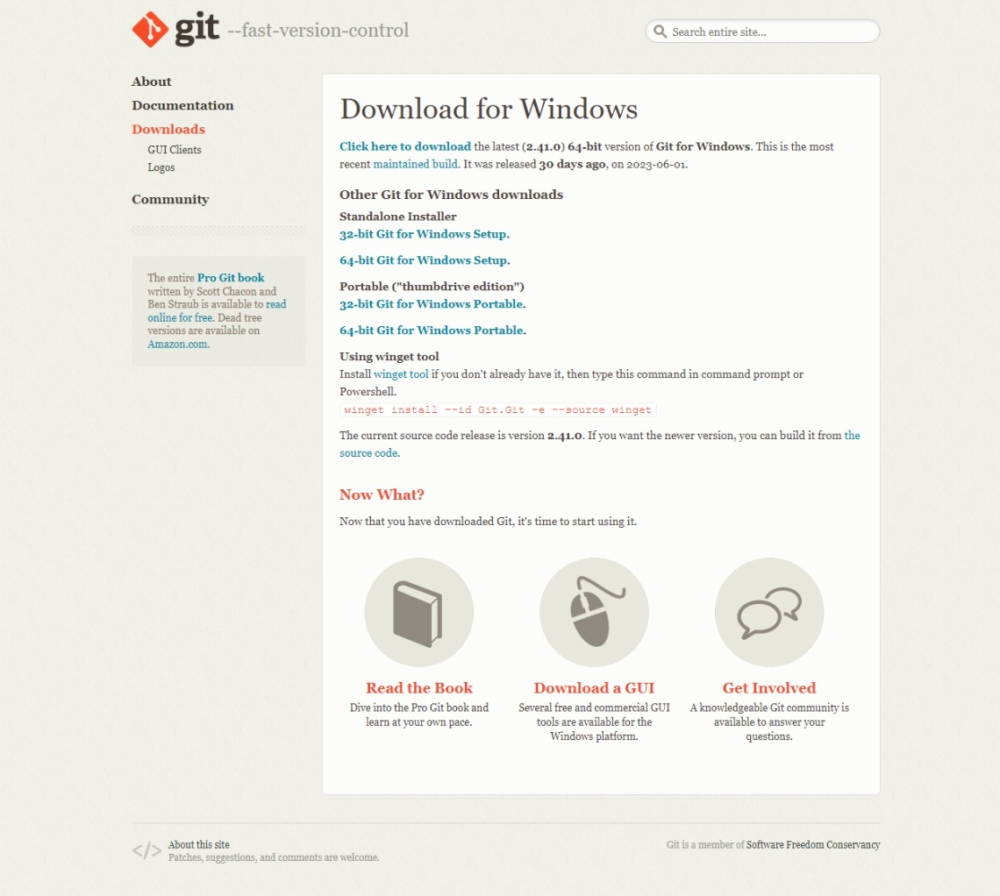
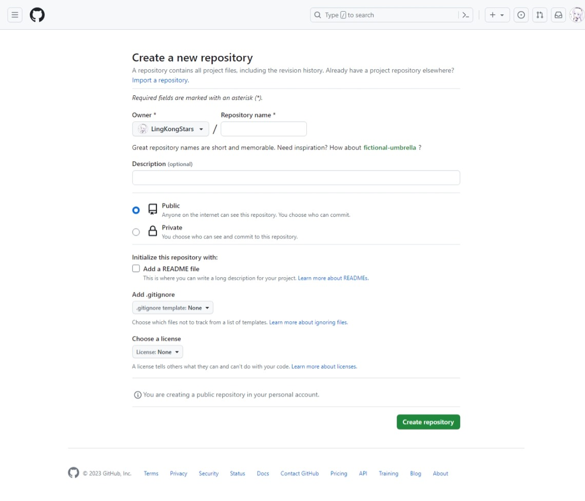

使用hugo搭建个人博客
1. 环境配置
-
下载git  选择适合你系统的版本下载
Windows一般就选第二个
-
注册github账号
-
创建仓库
 仓库名必须为
[你的GitHub名].github.io其他的都不用选，直接点最底下的Create repository -
下载hugo
这里只介绍Windows下的安装，其他系统见官方文档
同时按住
win键(就是开始菜单键)和r，在弹出窗口中输入cmd，点击确定打开命令行窗口。输入
winget install Hugo.Hugo.Extended或scoop install hugo-extended或choco install hugo-extended，按回车 这三个都一样不要关掉窗口
2. 创建博客
-
创建站点
找一个你喜欢的地方 桌面就行 ，记下路径，在之前的命令行窗口中输入
cd 你刚才记下的路径，回车输入
hugo new site 站点名称名称不重要，只是个文件夹名，随便取就行
输入
cd 站点名称同样不要关掉窗口
-
安装主题
选择一个你喜欢的主题下载，这里我用的是
PaperMod，接下来就以此主题为例，其他的自行参考主题文档在命令行中输入
git clone https://github.com/adityatelange/hugo-PaperMod themes/PaperMod --depth=1等待下载完成
-
配置设置
-
更改配置文件格式
先将配置文件格式改为
yaml：把hugo.toml的扩展名改为.yaml，然后输入hugo --config hugo.yaml打开
hugo.yaml，修改配置，以下是我的配置(仅供参考，可以对照本博客)baseURL: https://www.example.com/ # 绑定的域名 languageCode: zh-cn # 语言 title: 月落的小窝 # 网页标题 theme: PaperMod # 主题名字，和themes文件夹下的一致 enableInlineShortcodes: true #允许内联短码 enableEmoji: true # 允许使用 Emoji 表情 enableRobotsTXT: true # 允许爬虫抓取到搜索引擎 params: profileMode: enabled: true title: " " # 首页图片下的文字 imageUrl: "/images/img.jpg" # 首页图片 imageWidth: 150 # 图片宽 imageHeight: 150 # 图片高 buttons: # 图片下的按钮 - name: 帖子 url: posts/blog - name: 游戏 url: posts/game - name: 编程 url: posts/program label: # 右上角的标签 text: "月落的小窝" icon: "/images/img.jpg" iconHeight: 35 menu: main: - identifier: search name: 🔍搜索 url: search weight: 1 - identifier: home name: 🏠主页 url: / weight: 2 - identifier: posts name: 📚文章 url: posts weight: 3 - identifier: tags name: 🔖标签 url: tags weight: 4 - identifier: archives name: ⏱时间轴 url: archives weight: 5 # 相关链接 # socialIcons: # - name: "<platform>" # url: "<link>" # - name: "<platform 2>" # url: "<link2>" -
目录配置 在
content文件夹中添加以下文件：- content/ - posts/ - blog/ - _index.md - game/ - _index.md - program/ - hugo/ - _index.md - _index.md - _index.md - tags/ - _index.md - archive.md - archives.md - search.md以上是我的个人配置，可以自定义，但要保证与前面的配置文件对应，且除
content外每个文件夹下都有一个_index.md修改每个
_index.md文件：post下的--- title: "帖子" # 板块名称 description: "" # 板块介绍 hidemeta: true # 是否隐藏发布日期、作者等 ---blog下的--- title: "帖子" description: "" hidemeta: true ---game下的--- title: "游戏" description: "" hidemeta: true ---program下的--- title: "编程" description: "" hidemeta: true ---hugo下的--- title: "Hugo" description: "" hidemeta: true --- -
博客文章配置
打开
archetypes/default.md，将其中内容改为：--- title: "{{ replace .Name "-" " " | title }}" date: {{ .Date }} author: ["作者名"] keywords: # 关键词 - categories: - tags: # 标签 - description: "" weight: slug: "" draft: false # 是否为草稿 comments: true reward: true # 打赏 mermaid: true #是否开启mermaid showToc: true # 显示目录 TocOpen: true # 自动展开目录 hidemeta: false # 是否隐藏文章的元信息，如发布日期、作者等 disableShare: false # 底部不显示分享栏 showbreadcrumbs: true #顶部显示路径 cover: # 封面 image: "" #图片路径例如：posts/tech/123/123.png caption: "" #图片底部描述 alt: "" relative: false ---
-
-
创建文章
在命令行窗口中输入
hugo new posts/blog/blog1.md，可以看到，在content/posts/blog文件夹下出现了一个blog1.md， 接下来就可以写博客了。
3. 发布
-
本地预览
在命令行中输入
hugo server，然后在浏览器中打开http://localhost:1313/就可以看到了 -
发布
在命令行中输入
hugo，将出现的public文件夹中的内容推送到你之前创建的github仓库中访问
https://[你的GitHub名].github.io/就可以看到了